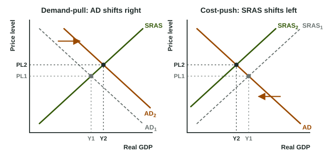

The AD-AS graph earns its keep when something changes. A war raises oil prices, a stock market boom makes families feel rich, a trading partner falls into recession. Each event moves one curve, and the new crossing tells you what happens to the price level, real GDP and unemployment in the short run. The method is the same every time: name the curve, name the direction, find the new equilibrium, compare it with the old one on both axes.
Demand shocks: AD shifts
A demand shock is a change in spending at every price level: consumption, investment, government spending or net exports. A positive demand shock shifts AD right. The economy moves up along SRAS, so the price level and real GDP rise, and firms hire, so unemployment falls. A rise in the price level caused this way is demand-pull inflation. A negative demand shock (falling confidence, a recession abroad) shifts AD left: the price level and real GDP both fall and unemployment rises.
Supply shocks: SRAS shifts
A supply shock is a sudden economy-wide change in costs. A negative one (an oil price spike, a drought, a jump in nominal wages) shifts SRAS left. The economy moves up along AD: the price level rises, but real GDP falls and unemployment rises. Inflation from rising costs is cost-push inflation, and rising prices with falling output is stagflation. A positive supply shock (cheaper oil, better technology) shifts SRAS right: the price level falls and real GDP rises.

Compare the two graphs: both raise the price level from PL1 to PL2, but output goes opposite ways.
| Shock | Curve | Price level | Real GDP | Unemployment |
|---|---|---|---|---|
| Positive demand shock (demand-pull) | AD right | rises | rises | falls |
| Negative demand shock | AD left | falls | falls | rises |
| Negative supply shock (cost-push) | SRAS left | rises | falls | rises |
| Positive supply shock | SRAS right | falls | rises | falls |
Worked example: read the shock from data. Country E's price level goes from 104 to 110, real GDP from 840 to 820 billion dollars, and unemployment from 4.2% to 5.5%.
- Direction of each variable: price level up, real GDP down, unemployment up.
- Which curve fits? Prices and output moving in opposite directions point to SRAS. Up and down together would point to AD.
- Which way? Higher prices with lower output: SRAS shifted left, a negative supply shock (cost-push inflation, stagflation).
- Inflation rate:
.
When both curves shift
Sometimes two things happen at once. If fuel prices rise (SRAS left) while exports boom (AD right), both shifts push the price level up, so it surely rises. But one pushes real GDP down and the other up, so the change in output is indeterminate: it depends on which shift is larger. On the exam, state the outcome you can be sure of, and say the other depends on the sizes of the shifts. Never invent sizes the question did not give.
Common slip: "Prices rose, so AD must have risen." A leftward SRAS shift raises the price level too. Look at output: if it fell while prices rose, the cause was on the supply side. A second slip is shifting AD for a change in costs (oil, wages, a drought). Costs belong to SRAS.
Showing a change on the graph
Draw the starting curves and mark the first equilibrium PL1 and Y1. Shift the one curve the event moves, label the old and new curves with subscripts (SRAS1 and SRAS2) and draw an arrow. Mark the new crossing as PL2 and Y2, with dashed lines to both axes, so the reader sees the price level and real GDP rise or fall. Then say what happens to unemployment: it moves opposite to real GDP in the short run.